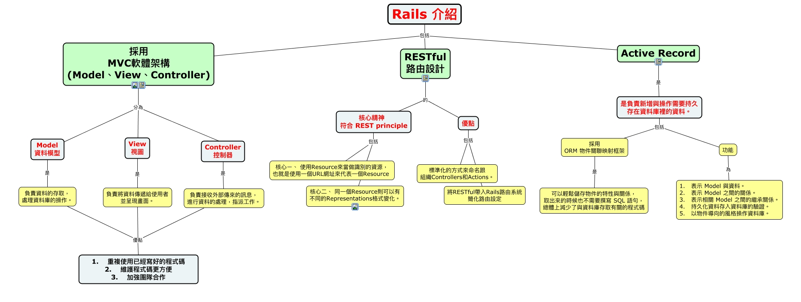

WARNING:
JavaScript is turned OFF. None of the links on this concept map will
work until it is reactivated.
If you need help turning JavaScript On, click here.
此概念图以 IHMC CmapTools 创建, 内含信息有关于: Rails介紹, Rails 介紹 包括 RESTful 路由設計, Rails 介紹 包括 採用 MVC軟體架構 (Model、View、Controller), 負責將資料傳遞給使用者 並呈現畫面。 優點 1. 重複使用已經寫好的程式碼 2. 維護程式碼更方便 3. 加強團隊合作, Rails 介紹 包括 Active Record, 負責接收外部傳來的訊息， 進行資料的處理，指派工作。 優點 1. 重複使用已經寫好的程式碼 2. 維護程式碼更方便 3. 加強團隊合作, View 視圖 是 負責將資料傳遞給使用者 並呈現畫面。, RESTful 路由設計 的 優點, 採用 MVC軟體架構 (Model、View、Controller) 分為 Controller 控制器, 是負責新增與操作需要持久 存在資料庫裡的資料。 包括 採用 ORM 物件關聯映射框架, 採用 MVC軟體架構 (Model、View、Controller) 分為 Model 資料模型, RESTful 路由設計 的 核心精神 符合 REST principle, 負責資料的存取， 處理資料庫的操作。 優點 1. 重複使用已經寫好的程式碼 2. 維護程式碼更方便 3. 加強團隊合作, 優點 包括 標準化的方式來命名跟 組織Controllers和Actions。, Active Record 是 是負責新增與操作需要持久 存在資料庫裡的資料。, Controller 控制器 是 負責接收外部傳來的訊息， 進行資料的處理，指派工作。, 核心精神 符合 REST principle 包括 核心二、 同一個Resource則可以有 不同的Representations格式變化。, 採用 MVC軟體架構 (Model、View、Controller) 分為 View 視圖, 是負責新增與操作需要持久 存在資料庫裡的資料。 包括 功能, 核心精神 符合 REST principle 包括 核心ㄧ、 使用Resource來當做識別的資源， 也就是使用一個URL網址來代表一個Resource, 功能 為 1. 表示 Model 與資料。 2. 表示 Model 之間的關係。 3. 表示相關 Model 之間的繼承關係。 4. 持久化資料存入資料庫的驗證。 5. 以物件導向的風格操作資料庫。
